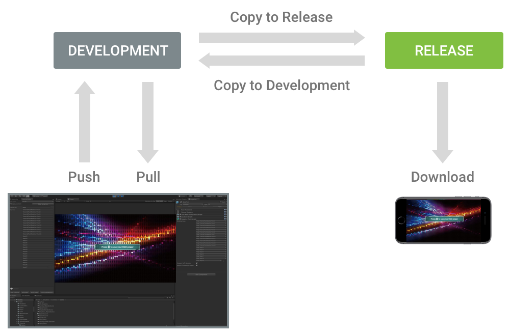

Managing Tutorials
The Tutorial Manager dashboard provides tools for managing the tutorials of your live game.
To open the Tutorial Manager dashboard from the Unity Editor:
Load your Unity project in the Editor.
Open the Tutorial Editor window (menu: Window > Unity Analytics > Tutorial Editor).
Click Go to Dashboard.
To open the Tutorial Manager dashboard from a Web browser:
Log in to your account.
Select the project from the project list.
Click Tutorial Manager to open the Tutorial Manager dashboard.
Note: Create your tutorials in the Unity Editor and push them to the dashboard using the Tutorial Editor window. Until you push a tutorial from the Editor, the dashboard has nothing to display.
Pushing and Pulling Tutorial Data
You can push and pull your tutorial model and text using the Tutorial Editor window in Unity.
Pushing from your project in the Unity Editor overwrites the tutorial structure and adaptive text stored in the Analytics service. The data is pushed to the Development environment, overwriting any existing data in that environment.
Pulling to your project updates the text of any AdaptiveText components to reflect the Development version of the text fields on the Tutorial Manager dashboard.
To push or pull your tutorial data:
Open the Tutorial Editor window in Unity (menu: Window > Unity Analytics > Tutorial Editor).
At the bottom of the window, click Pull Data or Push Data.
Using Tutorial Manager with version control software
If you use Tutorial Manager in a shared development environment with other creators, you probably use some form of version control software, such as git, mercurial, or Unity Contribute. In order to preserve your tutorial content between contributors, the Tutorial Manager creates a data file which can be committed to your repository. This file lives within your project at the following location:
/Assets/Resources/unity_tutorial_manager.dat
This file contains the data you enter in the Tutorial Editor, such as tutorial and step IDs.
Release and Development environments
The Tutorial Manager service maintains two separate environments. Tutorial Manager code running in the Unity Editor pushes and pulls data from the Development environment. Live games receive data from the Release environment. You can copy tutorial data from one environment to the other on the Tutorial Manager dashboard.

Tutorial Manager environments
This separation of environments allows you to improve and test your tutorials without affecting your live players until your changes are ready to publish.
Note: Whenever you change the data in the Release environment, whether by copying your data from Development or by editing tutorial text directly in the Release environment, the Tutorial Manager resets the running experiment.
Managing your Adaptive Text
The Tutorial Manager automatically creates a remote text field for your AdaptiveText components. These remote fields are updated when you push data from your project to the Analytics service. If you make changes to the text on the Analytics dashboard, you can pull those changes to your project. At runtime, the current text of the Remote Settings takes precedence over the text in the project. You can push and pull data from the Tutorial Editor window in Unity (menu: Window > Unity Analytics > Tutorial Editor).
Tutorial Manager provides both a Release and a Development environment. When you play your game in the Unity Editor and in development builds, the AdaptiveText component uses the text in the Development environment. When you run a release build, the component uses the text from the Release environment. (You can choose which type of build to create using the Development Build checkbox on the Build Settings window in the Editor.) If the Tutorial Manager cannot contact the Analytics service at runtime and no cached model exists, then the text of adaptive components is not changed.
Note that the AdaptiveText component has a property, Ignore if remote is empty, that you can set in the Inspector window. When you set Ignore if remote is empty to true, the text associated with the content is not updated when the corresponding remote value is an empty string. If Ignore if remote is empty is false, then the text is replaced by an empty string. The Ignore if remote is empty property applies both at runtime and when you pull data to your project using the Tutorial Editor window Pull Data button.